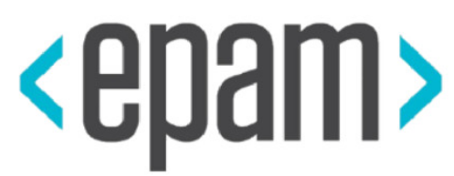

Zmiana pracy z obu stron barykady
 | lafk.pl/Prezki/ZmianaPracy.html |
Rutyna - stagnacja - zło
Ruszaj się, ruszaj. Błogosławiony, który idzie.
— Bieguni
- Status quo
łac. obecny, niezmieniony stan rzeczy - zwrot używany do określenia, że wszystko jest jak zwykle
O mnie

Obecnie
2 grudnia rusza 8 edycja Akademii Java, tylko skończę testerską i Pythonową ;-)
Agenda
Standard
Rekrutowany
Rekrutujący
Prawo (RODO)
Podsumowanie
Postaram się uwinąć ;-)
Standard
- Standard
powinien mieć pewną jakość, w końcu "poniżej standardu…"
Można również rzec, że to obecne ~status quo~
Z jednej strony
półtorej godziny teorii i tablicy z 5 minutami wstępu
a nuż nam wytoczy proces? "To my oddzwonimy do Pana"
poszukujemy juniora z 2 latami doświadczenia, mile widziane…
papierowy awans, poziomy awans
Również standard
stres mnie zjadł
no i oczywiście zadali najgłupsze możliwe pytanie o…
akurat tego nie powtórzyłem,
akurat nie miałem mojego laptopa
u nas w projekcie siedzimy na Jawie 6
nie, na chwilę obecną nic mi nie przychodzi do głowy
Formuła
recepta na sukces czyli nowy lepszy standard
w praktyce?
Pytania?
Jako rekrutowany
praemonitus, praemunitus
Cel
Panorama firm o danym profilu: chcę pracować…
z kim
w czym (tech + domena)
za ile (i czemu jestem tego wart / widełki)
Przygotowania: czas
intensywnie, ok miesiąca
powoli, od trzech do roku lub dłużej
wypracowanie portfolio i pogłębienie wiedzy
Przygotowania: CV
krótkie CV z klauzulą i tym o co Cię mają pytać
jaki Twój kod mogą zobaczyć?
Przygotowania: wstępne telefony
Klasyki:
okres wypowiedzenia
oczekiwania finansowe
Twoje preferencje
Przygotowania: wstępne sito
klasyki
CV (krótkie!)
powtórka / nauka KODEM
czas
Przygotowania: klasyki
klasyki wstępne za nami
Fibonacci, proste algo (np. HashMap)
GROUP vs HAVING…
kanon pytań rekrutacyjnych
- Mamałyga
rumuńska potrawa o papkowatej konsystencji, do nas przyszła przez Kresy i Lwów.

Potocznie: papka, breja. W gwarze śląskiej (słownik p.r. Jadwigi Wronicz): ślamazara.
Nie bądź mamałygą, przejaw inicjatywę.
Nie-mamałyga:
ma pytania o stanowisko, proces, ludzi, zadania
angażuje rekrutera, myśli na głos, prowadzi dialog
nie zostawia wszystkiego na głowie rekrutera
przejmuje inicjatywę - odpowiedziami steruje rozmową
Zmieniasz pracę?
Przygotuj się na klasyki i bądź dobry na tyle by przeskoczyć wstępne automatyczne sito, czyli: poducz się! Da Ci to poczucie pewności siebie, niezwykle przydatne do skontrowania stresu. Przygotuj portfolio autorskich projektów. Pozostaw innym kopiowanie tutoriali i pisz własne rzeczy. Miej pytania - rozmowa to część rekonesansu jaki przeprowadzasz przed decyzją.
Recepta na sukces dla zmieniającego
wiedz czego szukasz i weryfikuj
krótkie CV, będą negocjacje, będą pytania (klasyki)
portfolio, laptop, IDE to Twoja wizytówka
nie bądź mamałygą
Pytania?
Jako rekrutujący
Reprezentujesz pracodawcę - sobą.
Twój czas jest cenny i ograniczony.
Automatyzuj proces
wstępne sito
w pełni automatyczne etapy lub bądź tak blisko jak możesz
wideokoderka, współdzielenie ekranu - rekrutacja
automatyczne sito powinno być automatyczne
z audytem na wypadek pytań
RODO - prawo do zapomnienia (więcej osobno)
CodingBat

C0d1l1ty

Devskiller


Albo wytocz własne
w EPAMie portal i tester
łatwe wrzucanie zadań
auto-gradacja i propozycja następnych
statystyki z porównaniem
Sito telefoniczne
20 minut per człowiek (max!)
Yegge dla Amazona: kod, OOD, skrypty/regexy, AiSD, bity i bajty
ja dla EPAMu: kod, OOD, narzędzia programistyczne, AiSD
Ty dla Was: dopasuj
Koderka
Obowiązkowy punkt, główny punkt
Mniejsza: sito, lepiej zautomatyzuj, testy, narzędzia
Większa: nawyki, umiejki, rozwiązywanie problemów, gdzie szuka, warsztat
Zadanie koderskie jako sito
prosta specka, którą sam zrobiłeś na kilka(naście) sposobów
GitHub, GitLab, inny BitBucket, byle miało RESTowe API
skryptowi podajesz repo, dostajesz werdykt czy działa, jakieś statystyki
Ale mi zadanie ucieknie!
wymyśl nowe
wytocz własne rozwiązanie, by kodowali u Ciebie / co przyjmuje JARa
nadal wymyśl nowe
Większe zadanie koderskie
własne maszyny
czas Twój i ich - u mnie dzień dla nich i dwa dalsze dla mnie
specka na 4 godziny
można zrobić z tego coś naprawdę fajnego
Akurat przeczytałem artykuł
i co, spenalizujesz? za uczciwość?
Dalsze plany?
Cokwartalna impreza do Akademii Jawy
Jeden dzień, kilka osób po naszej stronie, dużo uwag i wrażeń
Wrażenia
dajmy je tak, by nie bać się procesów, ale je kuźwa dajmy
Wstępne sito
skraca czas stracony (obu stron)
zmniejsza niechęć do rekrutacji
mniej rekrutacji - prościej je lepiej zrobić
Przyjmujesz do pracy?
Dawaj zadania koderskie (większe i mniejsze). Zamiast pytać z teorii, poproś „przynieś laptopa i pokodujemy”. Zadawaj pytania otwarte, proszące o zademonstrowanie wiedzy w temacie. Proś o zakodowanie nietypowego przykładu polimorfizmu zamiast słuchać raz jeszcze o Psie, który - niespodzianka! - zamiast jeździć koleją, rozszerza Zwierzę. Przerywaj recytowanie formułek z pamięci, chyba że potrzebne do skontrowania stresu. Porzuć formułę półtoragodzinnej rozmowy technicznej. Daj czas na pytania, które kandydat zechce Ci zadać.
Recepta na sukces dla pracodawcy
automatyzacja, narzędzia, dobre wstępne sito
koderka: główny i obowiązkowy punkt
laptop i praktyka > pytania teoretyczne
Twoja opinia pomoże kandydatowi - nie skąp
daj czas na pytania
Pytania?
RODO
czyli dlaczego koszt 20 mln € lub 4% rocznego dochodu dużo zmienia
żaden ze mnie prawnik a poniższe jest niekompletne, pomijam np. obowiązek informacyjny
Koniec rekrutacji ukrytych
Nie podajesz ADO - nie spełniasz obowiązku informacyjnego.
Kandydat musi wiedzieć kto ma jego dane kiedy ten ktoś je dostaje, nie w odpowiedzi.
Agencje pośredniczące to podmiot przetwarzający, nie administrator DO.
Ściśle zdefiniowane DO
także do rekrutacji
można dodać do CV zdjęcie czy certyfikaty języków itp.
nie można tego wymagać będąc pracodawcą, to gest kandydata
gest kandydata - inna podstawa prawna - zgoda na przetwarzanie
zgoda w CV, akt wysłania CV z danymi to intencja
Nielegalne
są dane których nawet za zgodą nie wolno przetwarzać
stan zdrowia, informacje medyczne, także nałogi
stan cywilny
niekaralność zwykle też nie
Przyszłe rekrutacje
Prawo chroni aplikującego - domyślnie CV jest na konkretną rekrutację.
szukacie pracy w konkretnej firmie? wyraźcie zgodę na odpowiednie przetwarzanie
zgoda powinna być per pracodawca - czyli zmiana w CV przed wysłaniem :P
Wyrażam zgodę na przetwarzanie moich danych osobowych przez (nazwa firmy) w celu prowadzenia rekrutacji na aplikowane przeze mnie stanowisko.
— zgoda na 1 rekrutację
Wyrażam również zgodę na przetwarzanie moich danych osobowych w celu prowadzenia przyszłych rekrutacji przez wyżej wskazaną firmę.
— zgoda na rekrutacje danej firmy
Zgodę można wycofać
w dowolnym momencie, mejl wystarczy
albo dać na konkretny okres czasu, np. 6 miesięcy
Prawo do bycia zapomnianym
cel osiągnięto - dane już niepotrzebne
wycofano zgodę a prawo nie stanowi inaczej
sprzeciw podmiotu danych a prawo nie stanowi inaczej
Referencje za pozwoleniem
kontakt z byłymi miejscami pracy za pozwoleniem aplikującego, czyli gdy podane są ich dane kontaktowe albo oświadczy
Podsumowanie
nie rób drugiemu co Tobie niemiłe
świadomie wybierz pracę, miast brać pierwsze lepsze (lub najlepsze z takowych)
Ty wpływasz na to kto się dostanie - z kim będziesz pracować
znaj i korzystaj z prawa, RODO jest bardzo na Twoją korzyść